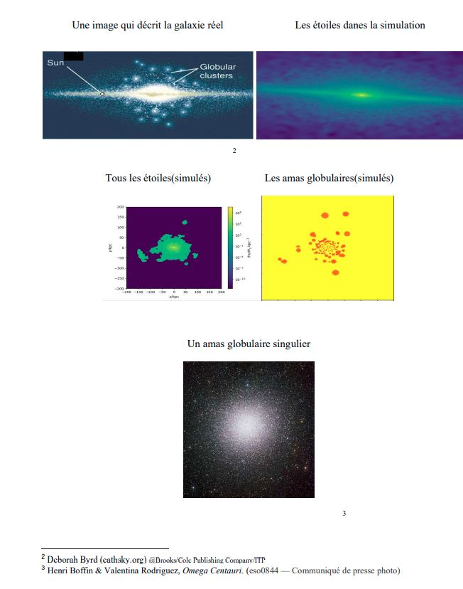
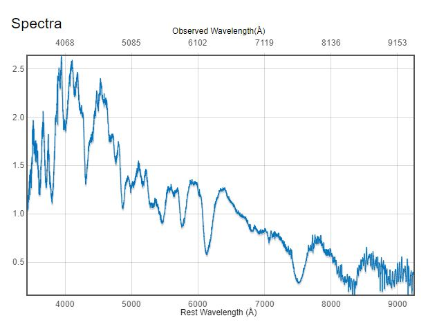

I have finshed my masters in Astrophysics at Iowa State University under the supervision of Dr. Curt Struck.
Most recent project
I have simulated the acceleration of a large sample of electrons in three dimensional eucledian space using GPUs. Future development would be to test non-eucledian space and coupling of the electromagnetic fields to simulate a full plasma environment.
Particle Acceleration by Pulsar Wind Nebula Termination Shock
I will research methods to simulate the acceleration of charged particles at a termination shock caused by the ultra relativistic magnetized jets of neutron stars colliding with the ambient super nova remenant. I will also look into the best methods of processing the data. This picture is a portrait made on Adobe Fresco, illustrating the termination shock and plasma inbetween the outer edges of the pulsar wind, and a zoomed-out picture of the inner edges of the exterior supernova remenant. Check out this video for more information clarify what pulsars are.
Previous Research
I was part of two physics research projects at Rutgers University as an undergraduate, and one poetic project intertwined with one of the latter. I analyzed outputs of cosmological simulations, described them in poetic illustrations in conjuction with French symbolist legends, and extracted telescope data to color intensity plots of exploding stars.

This is a snippet from my French Literary Thesis. It shows our galaxy on the top left, then a super zoomed in simulated galaxy, a zoomed out version, the target stars on their own, and the targeted: Globular Clusters
Cosmological Simulations and Symbolist Poetry
Following Dr. Brooks’ instructions, I analyzed data from a cosmological simulation; a simulation intending to replicate events starting after the big bang and up until when stars, galaxies, and periodic table elements form and stabilize. I studied the environments of high-pressure simulated star particles, with an original aim to replicate the present-day distribution in agreement with Milky Way observations. The simulation described in this paper describes one engineered to replicate our milkyway galaxy on Astronimcal scales; that is representing gravatational mass in the form of stars, gas, and invisible matter, along with the possession of other properties. My senior honors thesis was dedicated to trace a specific type of star, and expose them to accurate distortions that destroy them to validate the production of unidentified light at the center of our galaxy. I graduated as I was in the process of calculating the distruptions leading to their destructions, but that task was taken over and finished by my successor. The picture on the left demonstrates the picture of these star particles in the simulation by tagging stars that were created in high pressured environments.
French Literary Thesis Abstract: this paper explains basic and complicated concepts of Astronomy in relatable terms. It is derived from my senior physics thesis at Rutgers University. I both translate the information and represent the knowledge in an understandable and poetic representation. I then use cosmological concepts from both my paper and general sciences to illustrate poetic devices. I quote poetry from three famous french symbolists that heavily reflects the passionate view of astronomy and cosmology: Baudelaire, Rimbaud, and Mallarmé. The section of Mallarmé is specifically catered to analyze the pure abstract.

SN2018fhw at different intensities of light for different wavelength values, or otherwise known as l i g ht c o l o r
Supernova Data Reduction
I worked as a research assistant for Dr. Saurabh Jha to reduce spectroscopic data of supernovae obtained from the Southern African Large Telescope (SALT) in Sutherland.
Spectroscopy is the study of light after dividing it into multiple bands. The combination of light flux for a group of individual color bands is a method to identify and study supernovae and stars. The telescope dissects the light into many different color bands onto an electronic device (CCD) that absorbs the light and records it as intensity values on a two dimensional array. I converted data arrays of light intensity and pixel coordinates to a flux-color calibrated spectrum plot.
Emission lines of known colors are exposed to the CCD to convert pixel coordinates to color values. Then the exposure of a standard star is cross-correlated with its known flux value to produce a sensitivity function that calibrates the flux of target supernovae. The difference of having three CCDs instead of one makes SALT data more difficult to combine over the covered color spectrum. I was also given a hand-me-down pipeline written in Python (a programming language) to help me reduce the data, and asked to fix its bugs.
I am proud to state that I was the first to reduce the data for the SN2018fhw Supernova, which was then classified as a type Ia on astronomer’s telegram.